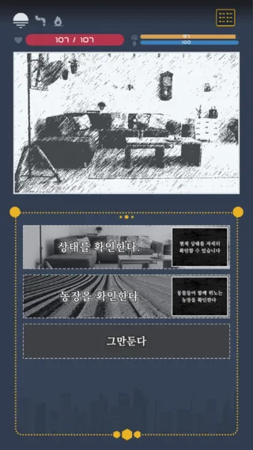
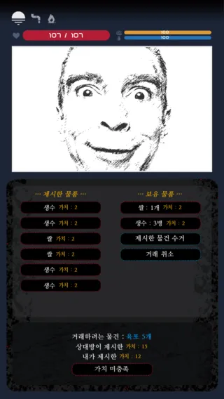
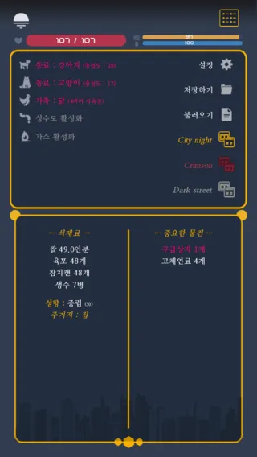
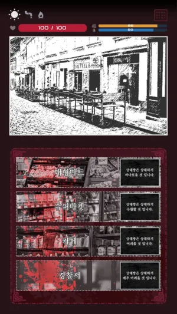
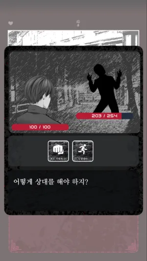
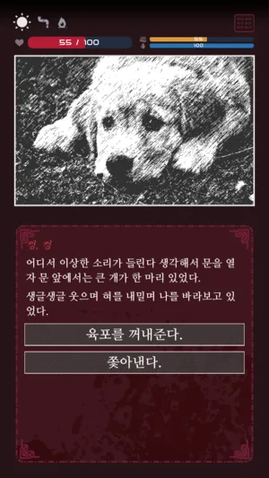

프로젝트 23 · 2019.12.29 발매
세상의 마지막 날, 살아남아야 한다.
하루하루가 목숨을 거는 로그라이크 서바이벌.
어느 날 갑자기 휴대폰 신호가 끊기고, 인터넷도 연결되지 않고, 창문 너머 풍경은 이상할 정도로 조용해진다. 세상은 멸망했다. 이제 살아남아야 한다. 낮에는 물자를 구하러 나가고, 밤에는 집에서 버틴다. 물, 식량, 체력, 감염, 그리고 다른 생존자들. 하루하루가 목숨을 거는 선택의 연속.
아침·낮·밤으로 나뉜 하루를 버텨내는 로그라이크 서바이벌.

하루는 세 개의 시간대로 나뉜다. 아침에는 상태를 확인하고, 낮에는 물자를 구하러 나가고, 밤에는 집에서 할 수 있는 일을 한다.

체력, 배고픔, 수분. 세 가지 상태를 관리해야 한다. 체력이 낮으면 전투에서 위험해지고, 배고프면 움직일 수 없고, 목마르면 쓰러진다. 상처, 감염, 공포 같은 상태이상도 주의해야 한다.

대형마트, 경찰서, 약국, 카페, 수퍼, 전자상가 등 다양한 장소에서 물자를 구할 수 있다. 쌀, 생수, 육포, 구급상자, 라디오, 무기, 방어구까지. 가방은 한정적이니 무엇을 챙길지 고민해야 한다.

밖에 나가면 다른 생존자를 만날 수 있다. 도움을 주는 사람도 있고, 무기를 들고 덤비는 사람도 있다. 때로는 유진처럼 함께 지내는 동료가 생기기도 한다.

상수도 시설과 가스레인지를 수리하면 물과 연료를 마음껏 쓸 수 있다. 자물쇠를 교체하면 밤 침입자를 막을 수 있다. 농장에서 강아지·고양이·닭을 기를 수도 있다.

라디오 주파수를 통해 서울 집결, 보급상자, 피의 무리, 오토바이 수리 등 다양한 루트가 열린다. 어떤 선택을 쌓아 올리느냐에 따라 완전히 다른 결말이 기다린다.
살아남아라. 하루하루가 마지막 날이다.
설명 내용이 여기에 들어간다.